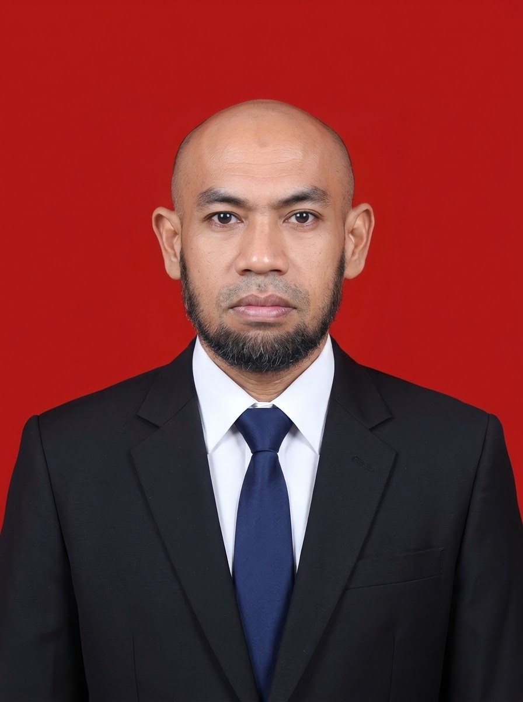

Nanang Agus Subekti
Penyuluh Anti Korupsi
ASN Bagian Administrasi Pembangunan Sekretariat Daerah Kabupaten Tulungagung. Melayani penyuluhan anti korupsi secara gratis untuk sekolah, komunitas, organisasi, dan masyarakat umum di Tulungagung dan sekitarnya.

Tentang Penyuluh
Profil singkat Penyuluh Anti Korupsi yang berkomitmen melayani masyarakat secara sukarela.
Nanang Agus Subekti
Penyuluh Anti Korupsi & Relawan Integritas
Penelaah Teknis Kebijakan pada Bagian Administrasi Pembangunan Sekretariat Daerah
Kabupaten Tulungagung
Sukarela, Gratis, dan Berintegritas
Saya Nanang Agus Subekti, seorang Aparatur Sipil Negara (ASN) yang bertugas di Bagian Sekretariat Daerah Kabupaten Tulungagung. Saya memiliki kepedulian terhadap pemberantasan korupsi dan berkomitmen menanamkan nilai-nilai integritas kepada masyarakat.
Melalui layanan ini, saya menyediakan penyuluhan anti korupsi secara gratis untuk sekolah, kampus, komunitas, karang taruna, organisasi pemuda, instansi pemerintah dan masyarakat umum di wilayah Tulungagung dan sekitarnya.
Visi saya adalah membantu menciptakan generasi yang jujur, berintegritas dan berani menolak segala bentuk korupsi, dimulai dari hal-hal kecil di lingkungan sekitar.
Layanan Penyuluhan
Semua layanan diberikan secara gratis. Anda hanya perlu menghubungi untuk menjadwalkan.
Penyuluhan Sekolah
Untuk siswa SD, SMP, SMA/SMK, dan mahasiswa di wilayah Tulungagung. Materi disesuaikan dengan usia.
Penyuluhan Masyarakat
Untuk warga, karang taruna, PKK, majelis, dan komunitas lingkungan di Kabupaten Tulungagung.
Organisasi & Instansi
Untuk organisasi pemuda, lembaga sosial, lembaga swasta. instansi pemerintah dan kelompok masyarakat.
Parenting Integritas
Menanamkan kejujuran pada anak di rumah dan keluarga.
Pelatihan Singkat
Workshop, seminar, dan diskusi interaktif antikorupsi.
Konsultasi Gratis
Tanya jawab seputar metode pencegahan korupsi dan penanaman nilai nilai integritas.
Topik yang Disampaikan
Materi disusun sederhana, aplikatif, dan relevan dengan kehidupan sehari-hari.
Mewujudkan Cita-Cita Kemerdekaan dengan Memberantas Korupsi
Kemerdekaan bukan sekadar lepas dari penjajahan, tetapi terwujudnya kesejahteraan bagi seluruh rakyat. Topik ini menjelaskan mengapa pemberantasan korupsi adalah bagian dari cita-cita kemerdekaan itu sendiri.
Menakar Keberhasilan Pemberantasan Korupsi
Keberhasilan pemberantasan korupsi perlu diukur, bukan hanya dirasakan. Topik ini memperkenalkan tiga indikator utama beserta penerbit, fungsi, dan cara membacanya
Berkaca pada Negara-Negara yang Bersih dari Korupsi
Negara yang bersih dari korupsi tidak muncul begitu saja. Topik ini melihat apa yang membuat negara-negara di peringkat atas Indeks Persepsi Korupsi (IPK) 2025 mampu menjaga integritasnya.
Apa Itu Korupsi?
Pengertian, jenis, dan contoh korupsi di sekitar kita.
Korupsi Kecil di Sekolah
Menyontek, titip absen, tidak jujur uang kas, dan manipulasi tugas.
Dampak Korupsi
Dampak bagi diri, keluarga, sekolah, masyarakat, dan negara.
Nilai Antikorupsi
Jujur, disiplin, tanggung jawab, adil, peduli, dan sederhana.
Pencegahan Korupsi
Langkah nyata mencegah korupsi dari lingkungan terkecil.
Berani Menolak & Melapor
Cara bersikap dan melaporkan dugaan korupsi dengan aman.
Berani Menolak & Melapor
Cara bersikap dan melaporkan dugaan korupsi dengan aman.
Berani Menolak & Melapor
Cara bersikap dan melaporkan dugaan korupsi dengan aman.
Berani Menolak & Melapor
Cara bersikap dan melaporkan dugaan korupsi dengan aman.
Berani Menolak & Melapor
Cara bersikap dan melaporkan dugaan korupsi dengan aman.
Berani Menolak & Melapor
Cara bersikap dan melaporkan dugaan korupsi dengan aman.
Berani Menolak & Melapor
Cara bersikap dan melaporkan dugaan korupsi dengan aman.
Berani Menolak & Melapor
Cara bersikap dan melaporkan dugaan korupsi dengan aman.
Metode Penyuluhan
Kegiatan dibuat menarik, interaktif, dan tidak membosankan.
Ceramah Interaktif
Penyampaian materi dengan bahasa sederhana dan tanya jawab.
Video & Animasi
Menonton video pendek yang relevan dan mudah dipahami.
Role Play
Simulasi situasi nyata untuk melatih keberanian bersikap jujur.
Permainan Edukatif
Kuis, puzzle, dan games antikorupsi.
Diskusi Kelompok
Membahas kasus dan solusi bersama peserta.
Deklarasi Komitmen
Membuat komitmen bersama untuk hidup jujur dan berintegritas.
Alur Layanan Gratis
Proses mudah, tanpa biaya, dan fleksibel.
Hubungi
Kirim pesan melalui WhatsApp atau email.
Jadwalkan
Tentukan tanggal, waktu, dan lokasi kegiatan.
Pelaksanaan
Penyuluhan dilaksanakan sesuai kesepakatan.
Evaluasi
Refleksi dan umpan balik untuk perbaikan.
Pertanyaan Umum
Beberapa pertanyaan yang sering diajukan.
Ya, layanan penyuluhan ini 100% gratis. Tidak ada biaya yang dipungut kepada peserta, sekolah, komunitas, maupun instansi.
Sekolah, kampus, komunitas, karang taruna, organisasi pemuda, lembaga sosial, dan masyarakat umum di wilayah Tulungagung dan sekitarnya.
Fleksibel, mulai dari 60 menit hingga 3 jam, dapat disesuaikan dengan kebutuhan acara.
Bisa, dengan catatan jadwal dan teknis pelaksanaan dibicarakan terlebih dahulu. Layanan tetap gratis; jika memungkinkan, pemohon dapat membantu akomodasi secara sukarela.
Tidak. Kegiatan ini merupakan inisiatif pribadi sebagai bentuk pengabdian kepada masyarakat, tidak mewakili instansi manapun.
Hubungi Saya
Jadwalkan penyuluhan gratis untuk sekolah, komunitas, atau organisasi Anda.
Informasi Kontak
Layanan ini tidak berbayar. Mari bersama membangun Tulungagung dan Indonesia yang jujur serta berintegritas.